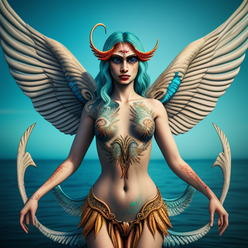

Совет Двенадцати
Совет Двенадцати
Боги – первые маги. Обладатели небывалой магической силой. Могли жить несколько тысяч лет.
Двенадцать – Совет Богов, приближенных и главнокомандующих на Олимпе.
Состав: Элор, Шейра, Даатира, Ямар, Диана, Элион, Чаккаэль, Мадар, Рафаэль, Наома, Эшера, Авдар.
Ведунья/Чистокровный
Потомок первого поколения богов. Чаще употребляется в отношении потомков Двенадцати, но применим и к потомкам союзов богов, не входящих в Двенадцать. Могут жить как группой, так и поодиночке.
Ведьма
Потомок бога и человека. Могут быть как женщинами, так и мужчинами. Живут до 1000 лет. В зависимости от магического потенциала. Как правило, собираются в ковены, которыми заведует Старшая Сестра – самая старая и опытна ведьма.
Маг
Человек, обладающий магическим потенциалом. Потомок ведьм. Слабее ведьмы. Не может самостоятельно проводить ритуалы или колдовать. Требуются артефакты и заряженные талисманы
Вампир
Существо, которым стал Николя и все им обращенные чистокровные. Вампиром может стать лишь чистокровный. Обладает магией, спокойно употребляет пищу, но нуждается в крови. Жажда крови – наказание за вечную жизнь и хорошую регенерацию. В теории, убить можно. Но чаще смерть вампира – его осознанный выбор. Вампир накладывает на себя заклинание НеСмерти, считается, что сознание и душа вампира попадает в Лимб
Русалки
Существа, живущие в воде. Раньше жили только в море Южных Земель, но распространились и в Северном море, и даже в море Амо. Редко живут в озерах и реках. В реках в основном для миграции. Природа происхождения неизвестна. Питаются сердцами людей. Сложны для охоты, ибо могут прятаться в глубинах.